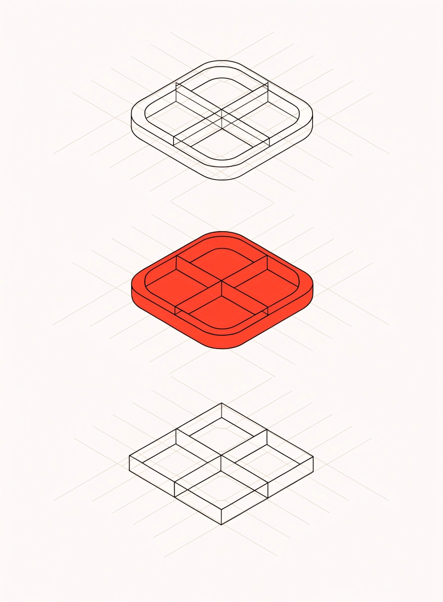
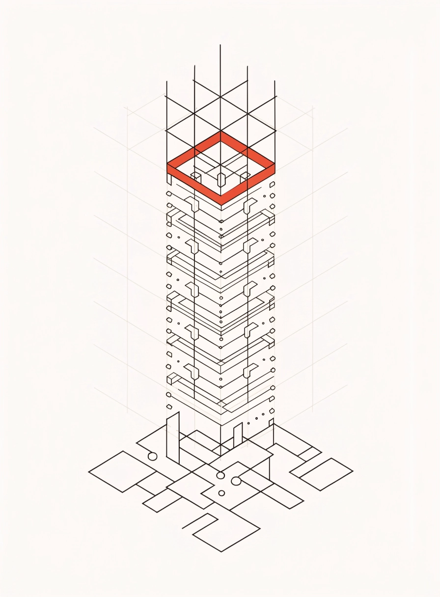
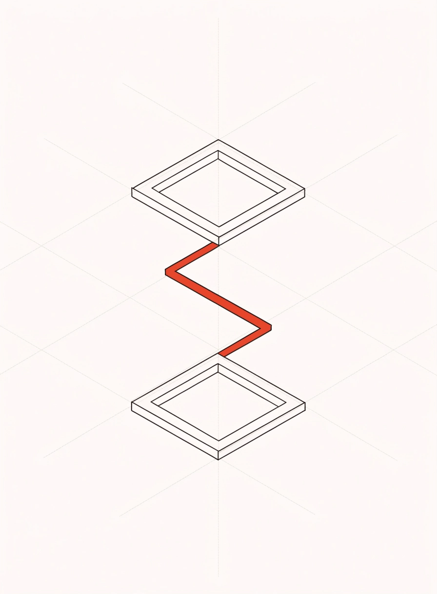
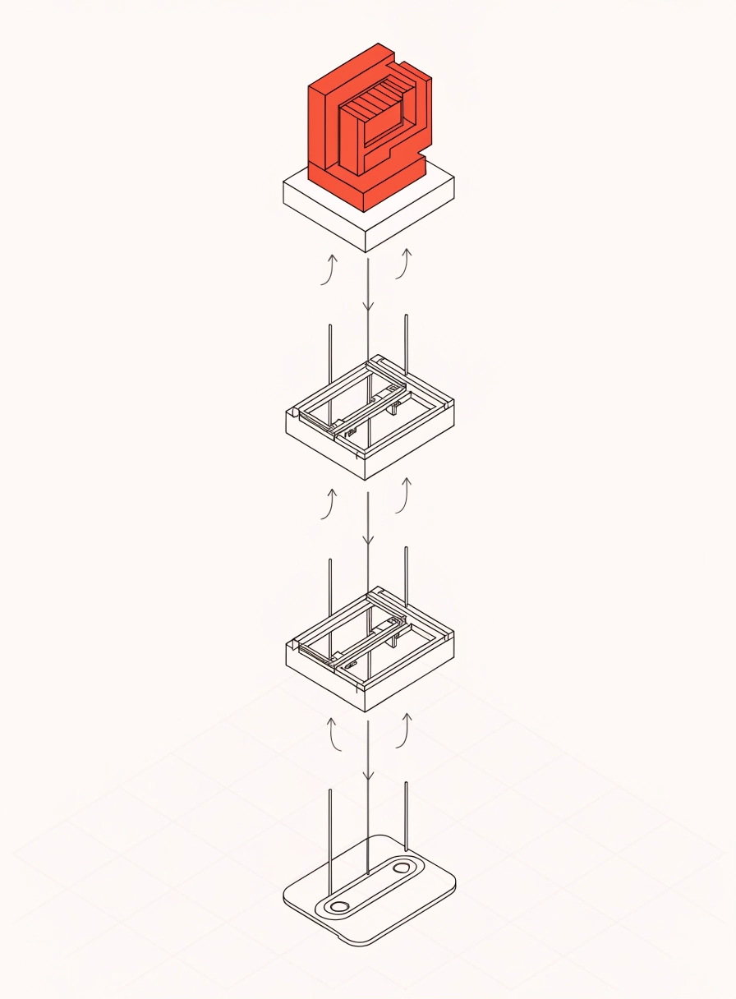
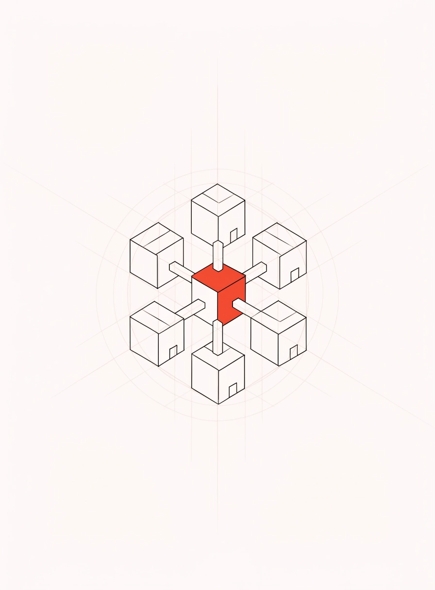
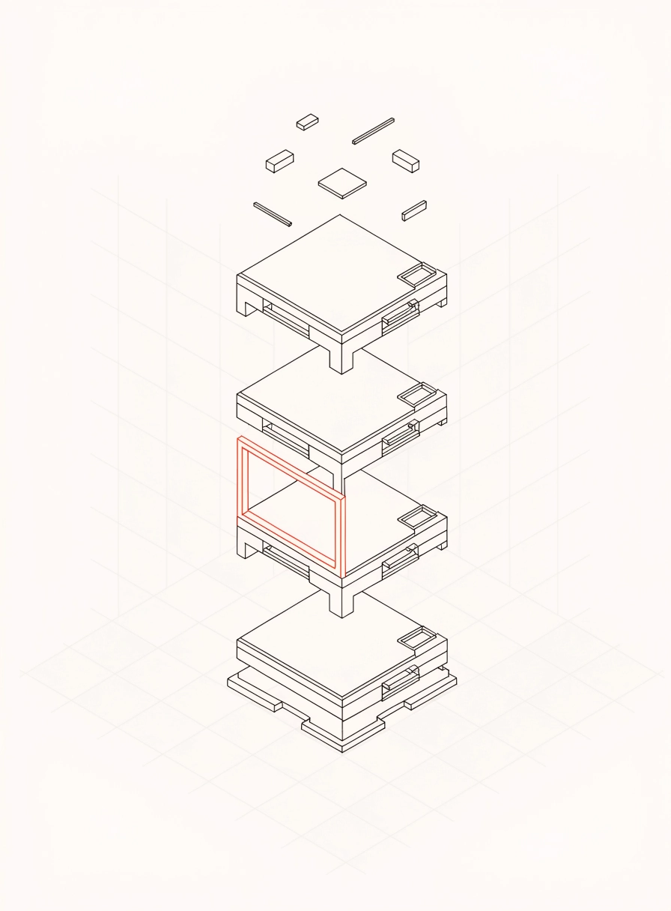
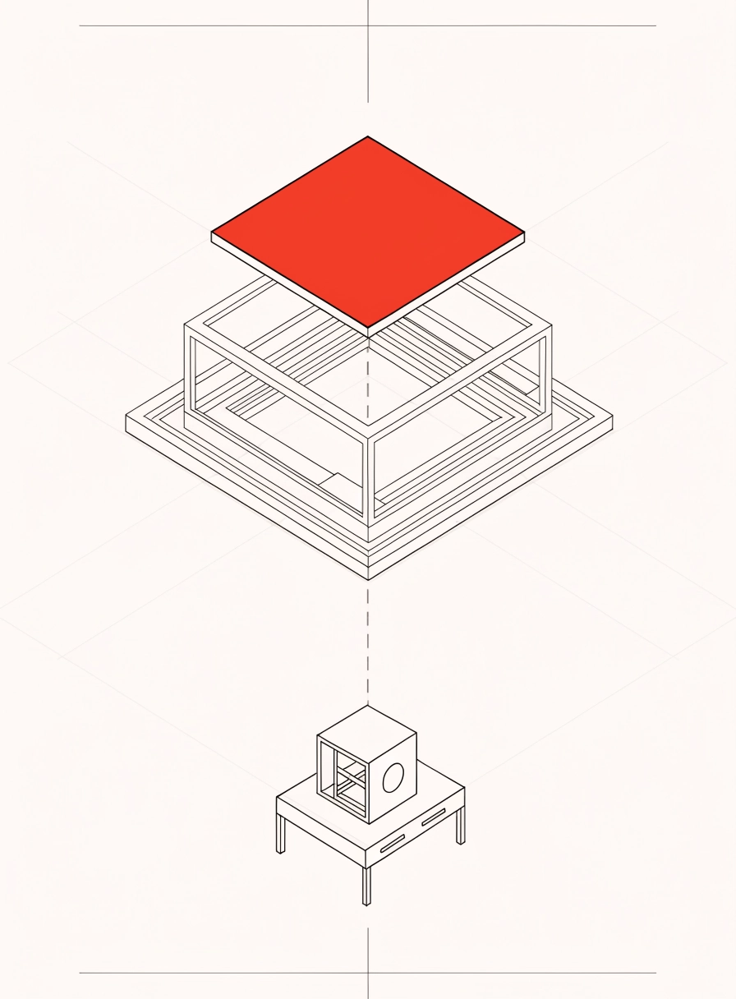

Выбор варианта
Финальный блок: семь иллюстраций вместо одних гор
Снимок гор стоял в блоке финального призыва сразу на семи страницах — один и тот же кадр подряд. Вместо него по кадру на страницу, в утверждённом стиле A: изометрия тонкой линией, один красный акцент, фон в цвет сайта. Формат 3 : 4 — колонка финального блока высокая.
На страницы ещё не поставлено — жду вашего слова. На главной горы остаются: там это кадр из утверждённого макета Figma.
Сейчас на семи страницах







